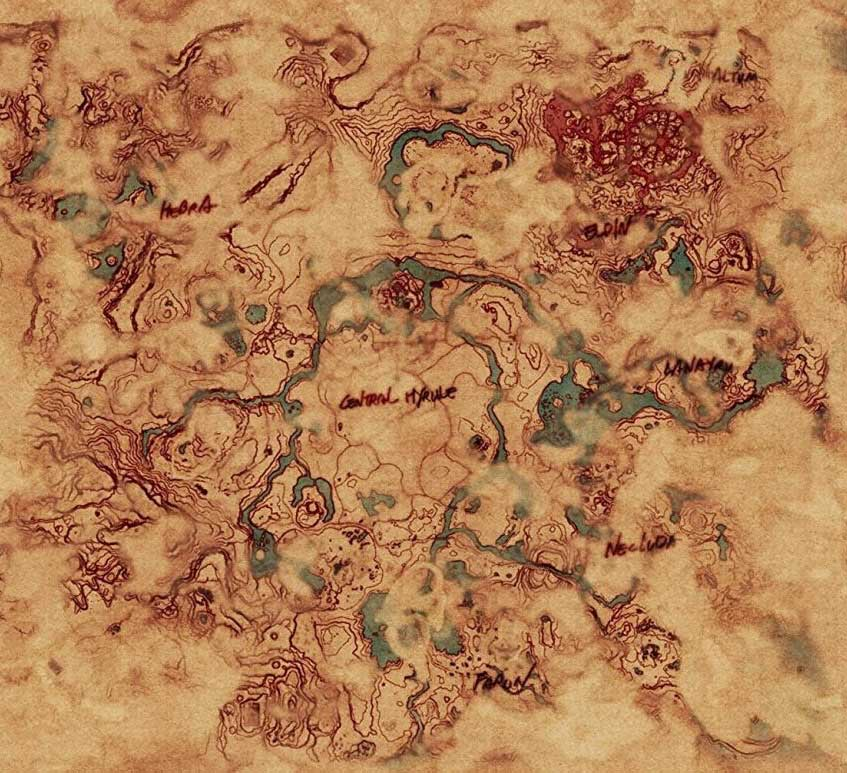
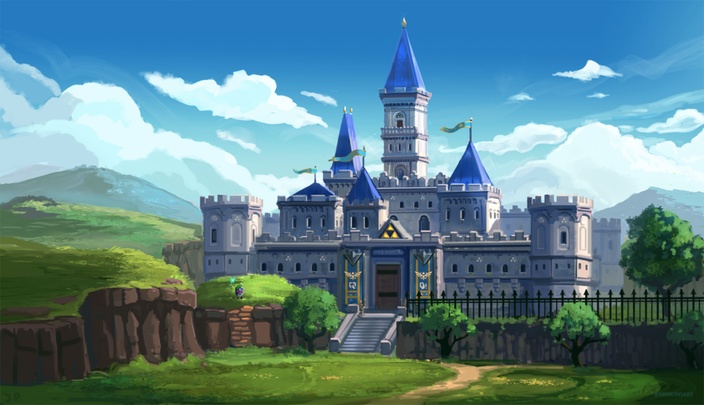
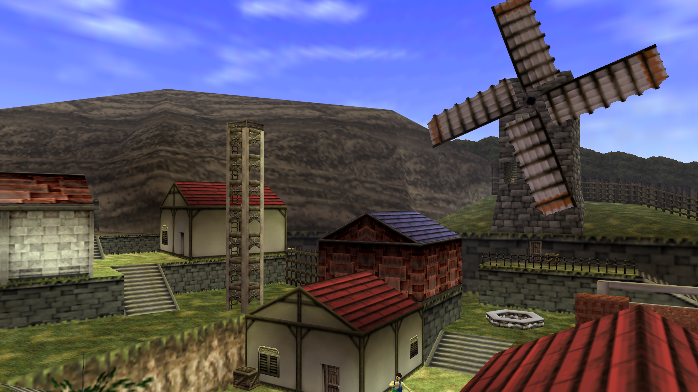
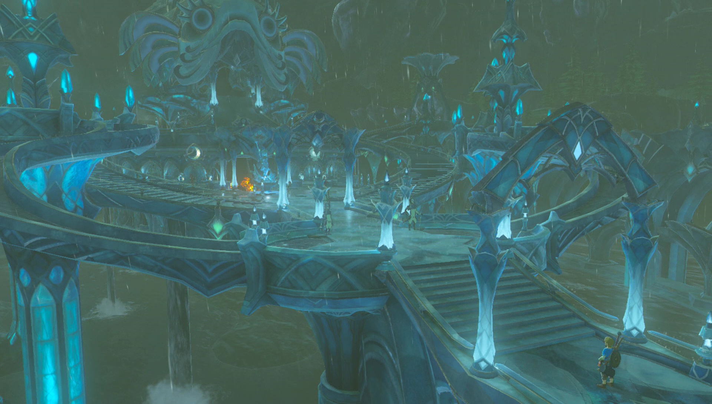
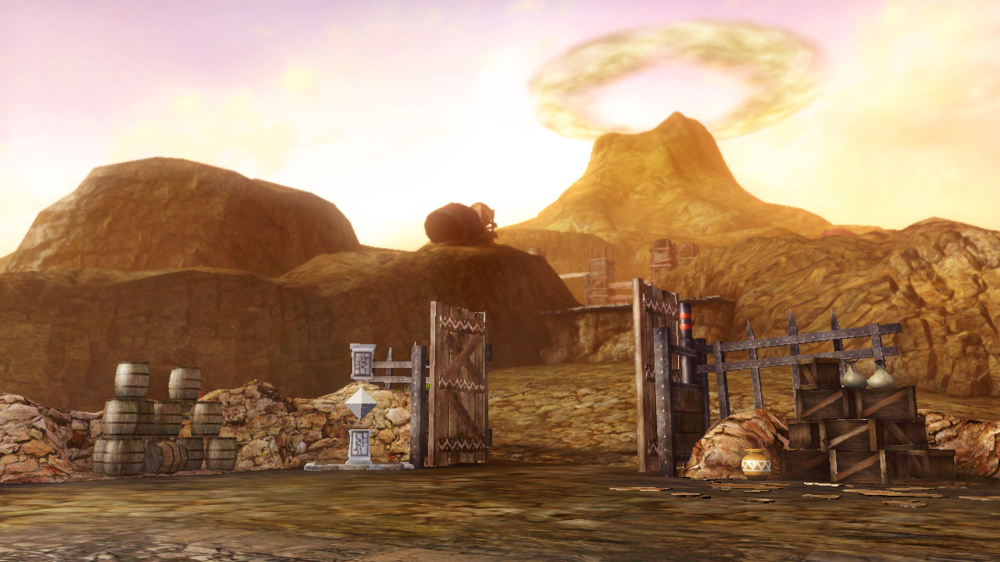
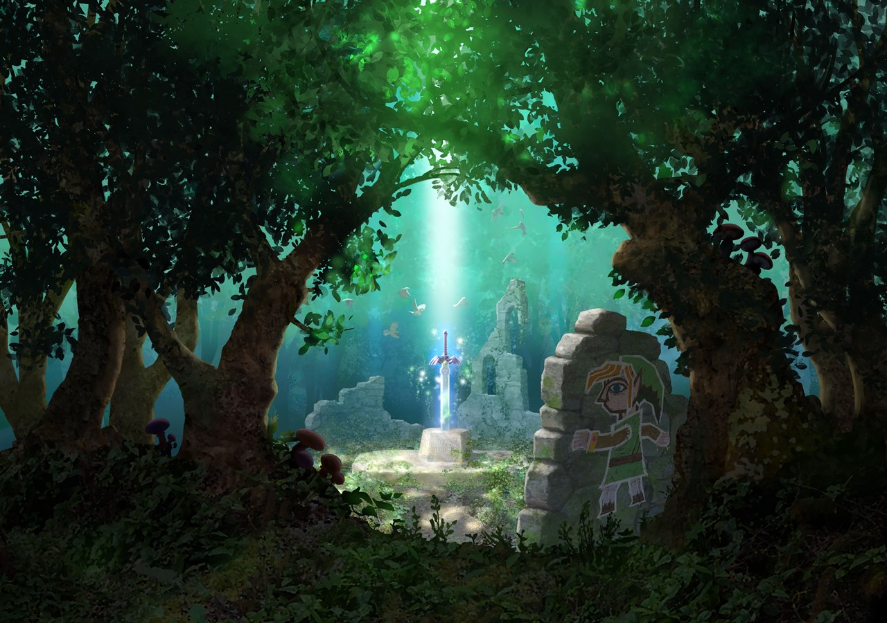
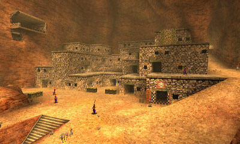

Locations

Hyrule Map as seen in the latest game, The legend of Zelda: breath of the Wild, being the larger most detailed map of the series to date.
Hyrule Castle

Hyrule Castle is the seat of Hyrule's monarchical government and the home of the Royal Family of Hyrule, which usually includes Princess Zelda and the normally unseen King of Hyrule. The castle first debuted in A Link to the Past, the third game in the series.
Kakariko Village

Kakariko Village is a recurring location in The Legend of Zelda series. Kakariko is said to have been founded by the Sheikah, attendants who serve the Royal Family of Hyrule, and it used to be their village exclusively before Impa herself opened up the village to the common people. The graveyard by the village is known to be the final resting place of the members of the Royal Family and deceased Zora leaders.
Zora's domain

Zora's Domain is a recurring location in The Legend of Zelda series. It is based on Zora's Waterfall from A Link to the Past. It serves as the home of the aquatic race known as the Zora.
Death Mountain

In The Legend of Zelda, Death Mountain is the name of the region located in northern Hyrule. It is a large sprawling expanse of rock covering the northern border of the map. The mountain range is usually home to some of the stronger enemies, such as Lynels, who are said to be the guardians of the mountain. Occasionally, Boulders will fall from the hills. The mountains also have a few streams and ponds that are home to River Zoras.
Lost woods

The Lost Woods is a maze-like area of confusing forests that has made several appearances throughout the Zelda series. Its layout is usually designed to make anyone who enters to become irreversibly lost, and the only way to exit the forest is by navigating it in specific directions.
Gerudo Fortress

The Gerudo's Fortress, also known as the Thieves' Hideout, is located at the far end of Gerudo Valley and is the gateway to the Haunted Wasteland. It serves as the hideout for the race of thieves known as the Gerudo who heavily guard the entire fortress. As such, any trespassers will be immediately caught and thrown into a cell high above the complex.